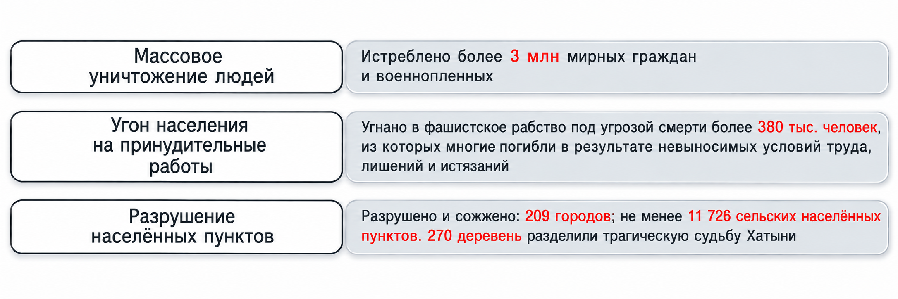
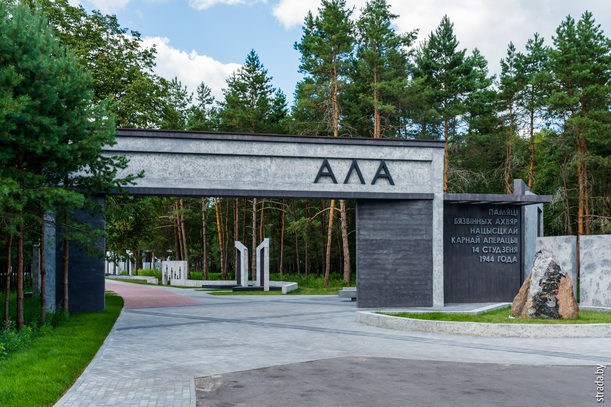
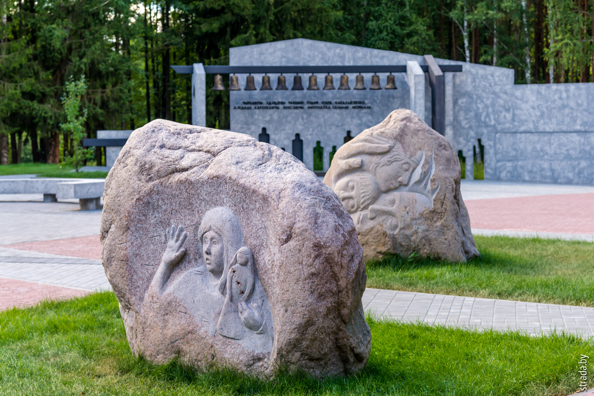
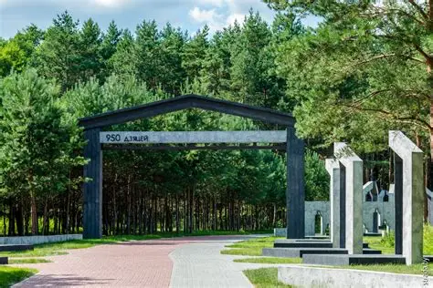

Что такое геноцид
Геноцид — уничтожение определённых групп населения по расовым, национальным и религиозным признакам
За весь период немецко-фашистской оккупации Могилевского района, по неполным данным, немецко-фашистскими захватчиками уничтожено более 2000 человек, в том числе 820 женщин, 233 ребёнка, силой вывезено в немецкое рабство около 2643 человек советской молодёжи.
Методы уничтожения советских граждан, которые использовались немецко-фашистскими захватчиками, были разными, но в своём большинстве осуществлялись путём зверских пыток, издевательств, массовых расстрелов и сожжений — как живых людей, так и трупов — с целью сокрытия следов преступлений…

Это не забыть
Колдычевский лагерь смерти


Шталаг


Ола


